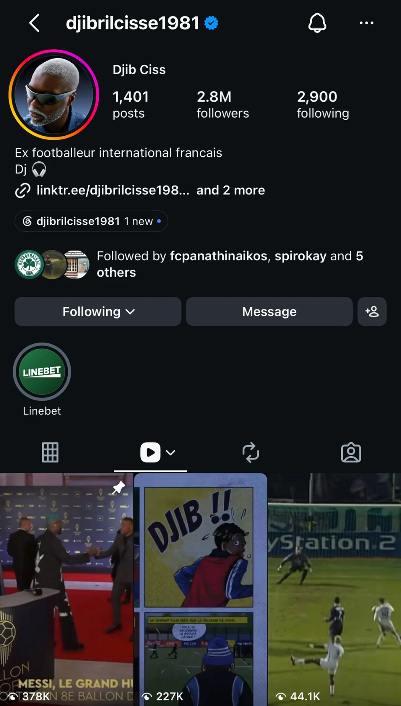
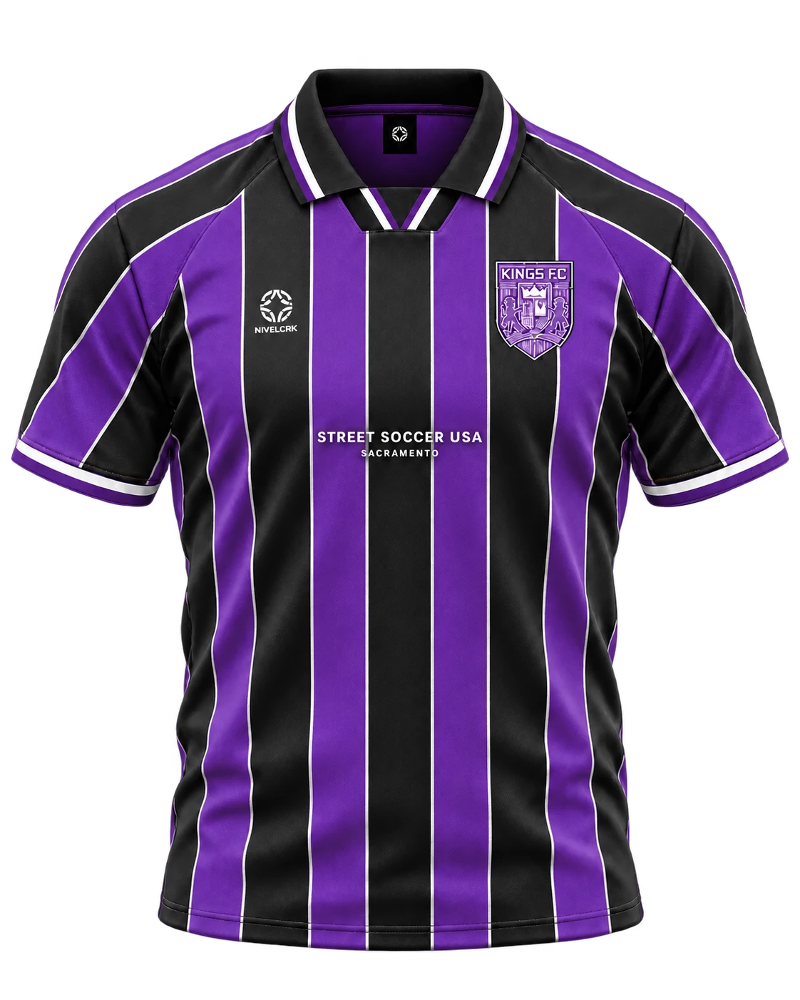
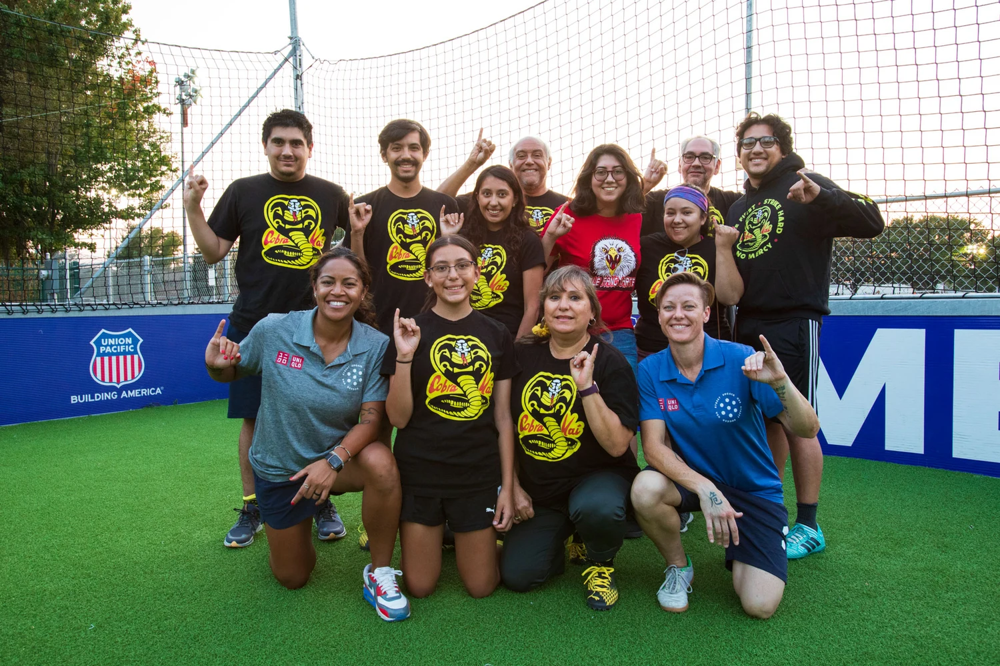
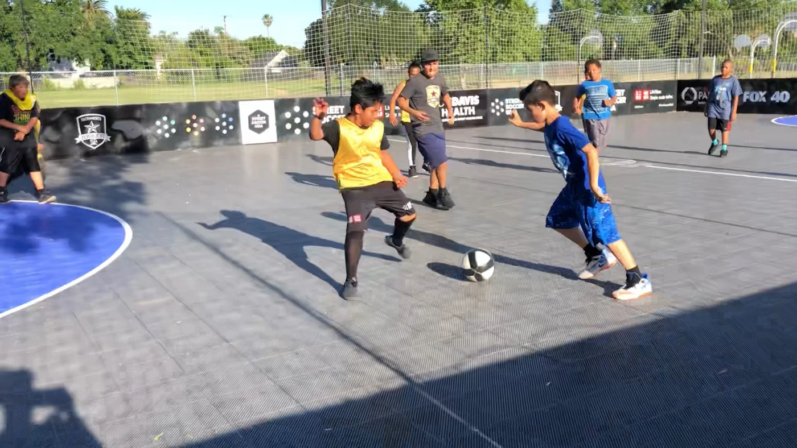
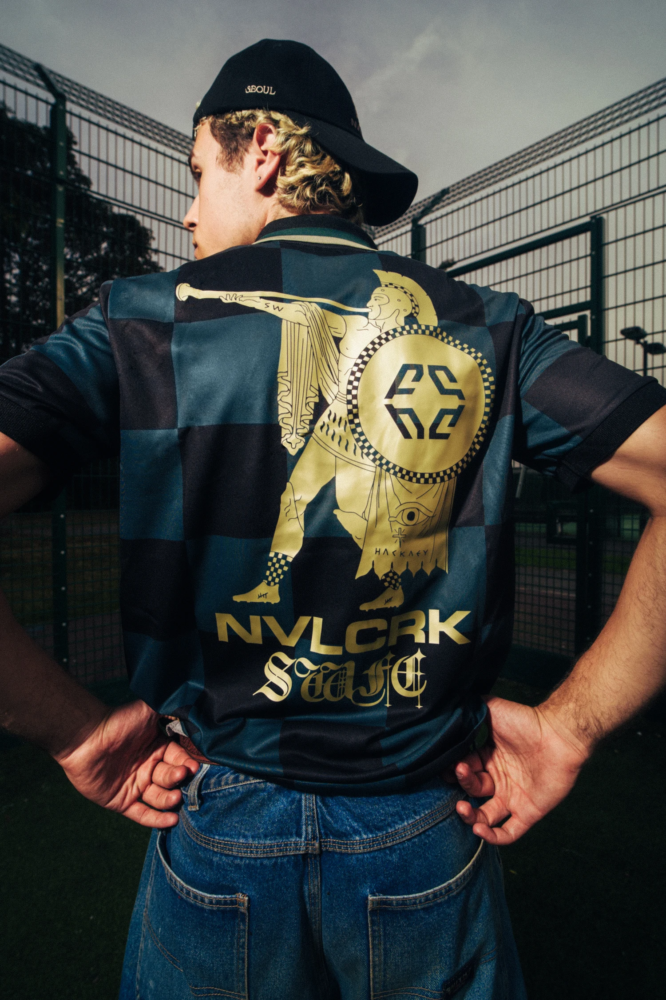
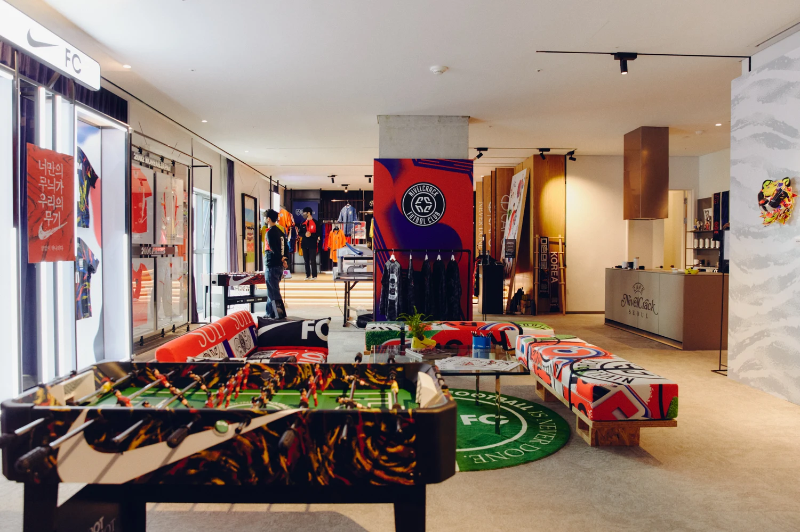
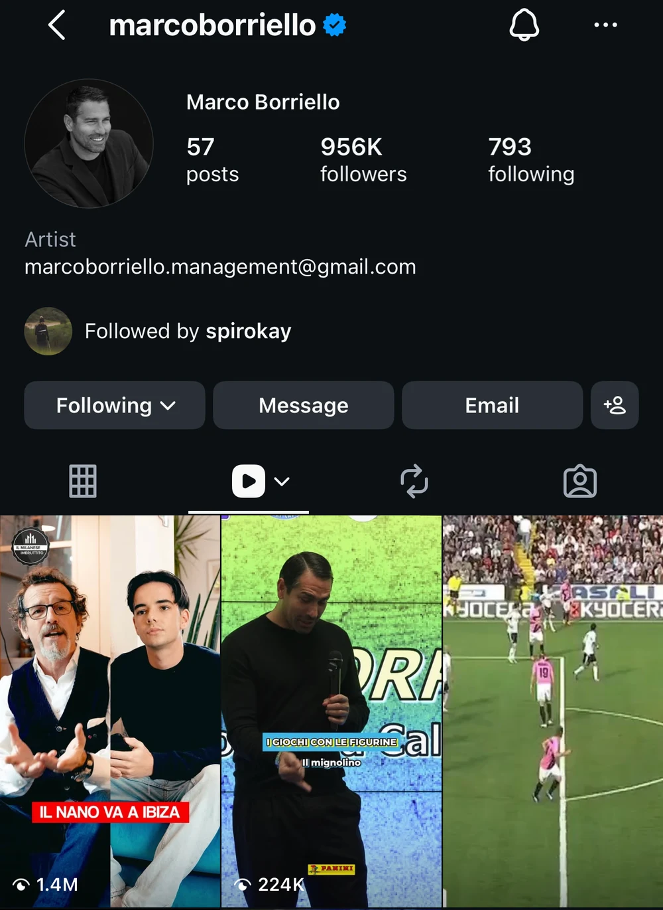
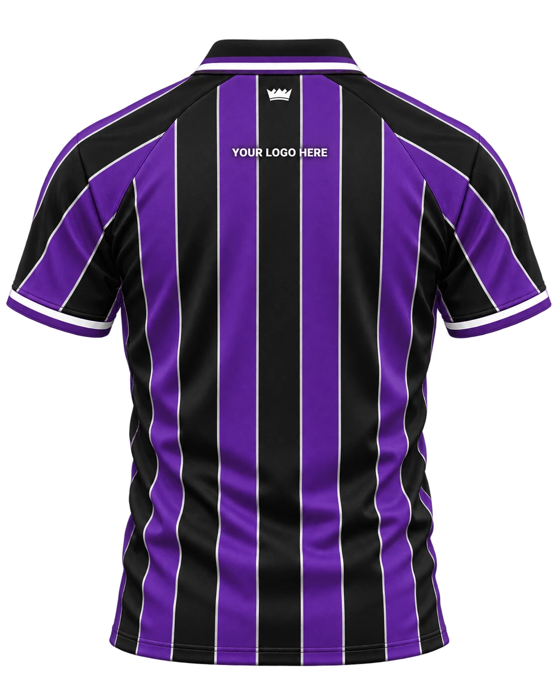

FRANCE / GLOBAL FOOTBALL CULTUREDJIBRIL
DJIBRIL
CISSÉ
@djibrilcisse1981
2.8MFOLLOWERS*
Sacramento Kings × Nivelcrack.A full apparel collaboration. A global campaign.

A full collection. A shared ambition.
Led by the purple Kings FC jersey. The ambition: a first-of-its-kind meeting of NBA identity, football culture and Sacramento community.
Help bring the collection to the world through a campaign spotlighting Street Soccer USA’s work in Sacramento.
Partner with usSacramento’s NBA team. A basketball franchise bringing its identity and hometown pride into football culture.
A Seoul-based football and streetwear brand with international collaborations, creative projects and a global cultural network.


Street Soccer USA is a nonprofit making soccer a force for community in Sacramento.
Its local work includes free youth soccer and programs for people experiencing or transitioning out of homelessness.
Our campaign brings that work into focus. Local players, coaches and their stories, alongside a clothing collaboration built to travel.
Discover the Sacramento initiativeA football and streetwear brand from Seoul.
Connecting the game, fashion and creative culture
through collaborations that cross borders.


Selected projects from the supplied brand deck. Prior collaborators, not sponsors of this campaign.
International projects. Community activations. Football and streetwear media. A cultural network ready for a Sacramento story.
The Sacramento Kings, Street Soccer USA, and the community at the center of it all.
Selected outlets from Nivelcrack’s supplied media roster. Editorial outreach is an opportunity; coverage is not booked.
Bring Djibril Cissé and Marco Borriello into the world of Street Soccer USA Sacramento. Reveal the collection through the people, places and energy of the city.
COMBINED INSTAGRAM
FOLLOWER SNAPSHOT*

@djibrilcisse1981

@marcoborriello
*Supplied Instagram screenshots, October 8, 2026. Combined count is approximate, overlaps audiences, and is not a reach forecast. Talent appearances and posts remain to be agreed.
Street Soccer USA players and coaches share the pitch and the story. The proposed icons draw attention; Sacramento gives the campaign its heart.
A collection reveal at the home of the Sacramento Kings, bringing the game into the city.
Collection details, Street Soccer USA voices, and a reveal worth waiting for.
A reveal with Sacramento players, proposed global talent, and your brand in the story.
Launch film, partner channels, talent content, press outreach, and paid creative.
Arena location, permits, talent, partner posts, and event format are proposed and subject to approval. Launch date to be agreed.
Your sponsorship helps fund the campaign.
Your brand receives a defined creative package.
One cinematic launch film connecting the jersey, the people, and your brand.
A dedicated brand edit built for your campaign, with a clear closing message.
Short-form edits for paid and organic use across agreed channels and formats.
Edited photographs of the product, the community, and the launch atmosphere.
Proposed starting scope. Final quantities, formats, production plan, and usage terms will be agreed with the partner.
A distinct jersey placement, campaign presentation, launch integration, and brand-specific edits.
A compact upper-back sponsor mark. Street Soccer USA on the front. The arrangement can be reversed; the logos stay on separate sides.
Brand treatment woven into the film, edits, and launch experience.
A planned asset handoff for agreed organic and paid use.
All logo placements and commercial rights are proposed. Talent, music, term, territory, exclusivity, and paid usage require agreement.
Delivered views, video completion, and reach where channel reporting is available.
Shares, saves, engagement, and real responses to the community story.
Trackable visits and agreed sponsor actions, with paid results reported separately.
Success measures are set with the sponsor before launch. Reporting built around the agreed campaign objectives.
Street Soccer USA on the front.
Your brand high on the back.
Separate sides. Separate identities.

Prefer the reverse? Sponsor on the front, Street Soccer USA on the back. The marks always stay on opposite sides.
Proposed placement study. Final marks, scale and positioning to be agreed.
Help launch a global collection.
Put a Sacramento story on the world’s stage.
A global game.
A Sacramento heart.
A place for your brand.